Rominger se llevó la etapa más bonita de lo que llevamos de carrera.
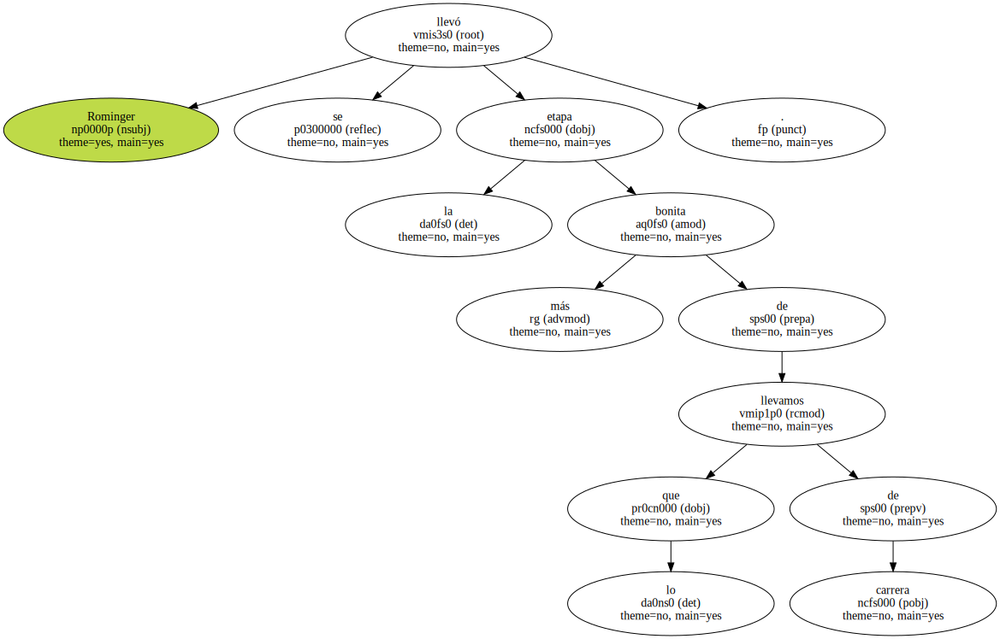A tal señor , tal honor.

En la jornada que doblaba el ecuador de la prueba , el principio de la cuenta atrás , el suizo ratificó de la forma más rotunda su supremacía.
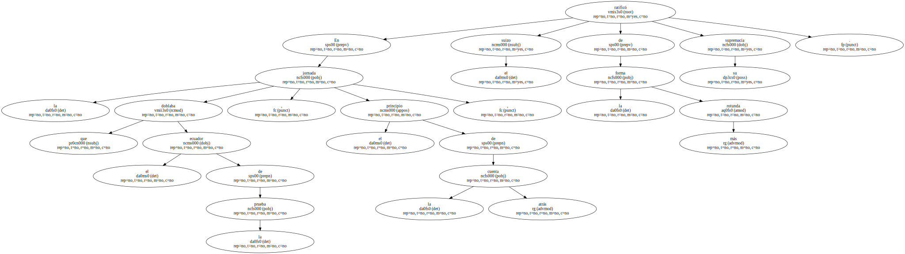A partir de ayer , además , y coincidiendo con su cuarto triunfo parcial , es el líder de la regularidad.
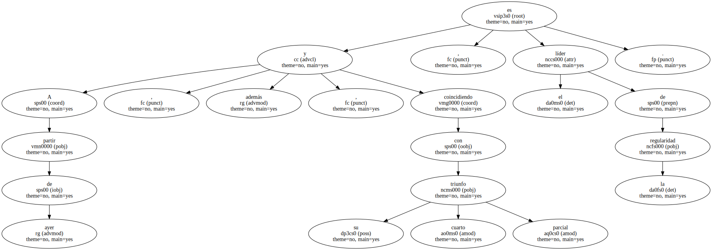Amenaza con ganarlo todo : la general , la montaña , la clasificación por puntos.
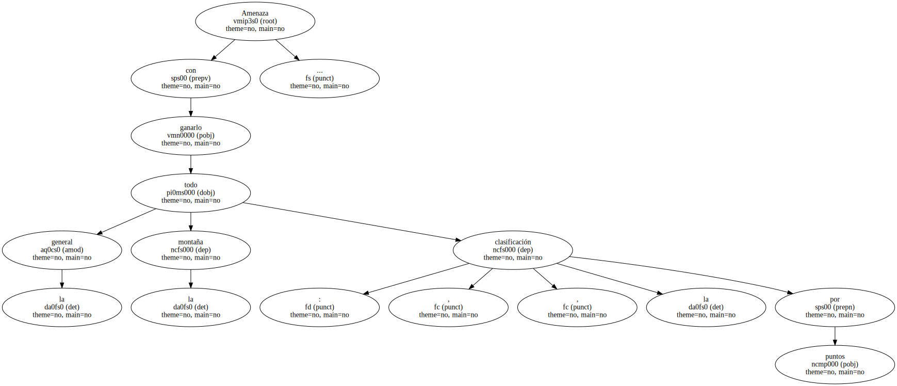La fuerza se le sale por los poros y no la puede contener.
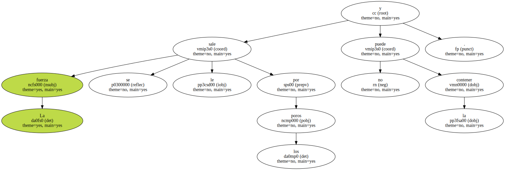Tony volcó sobre la ruta una categoría que sólo Indurain posee en el ciclismo actual y que esta temporada juega con el misterio.
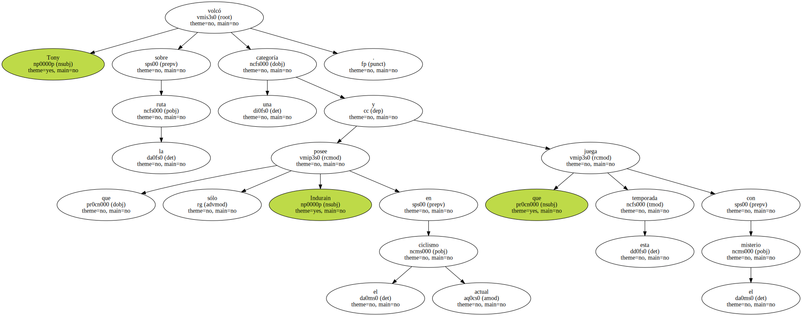Zarrabeitia puso la rebeldía , y Delgado la gallardía.
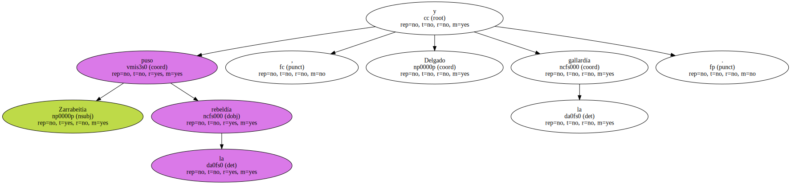Mikel , amén de fuerte , es temerario por lograr despertar a la bestia de su poderoso letargo , devastador en su bostezo.
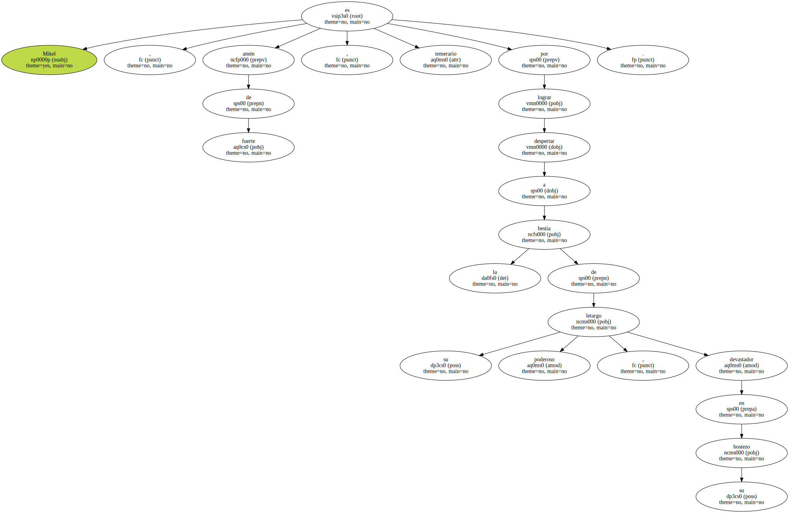Su ataque , sin embargo , no perseguía atentar seriamente contra la dictadura de Rominger , sino distanciar a Zülle.
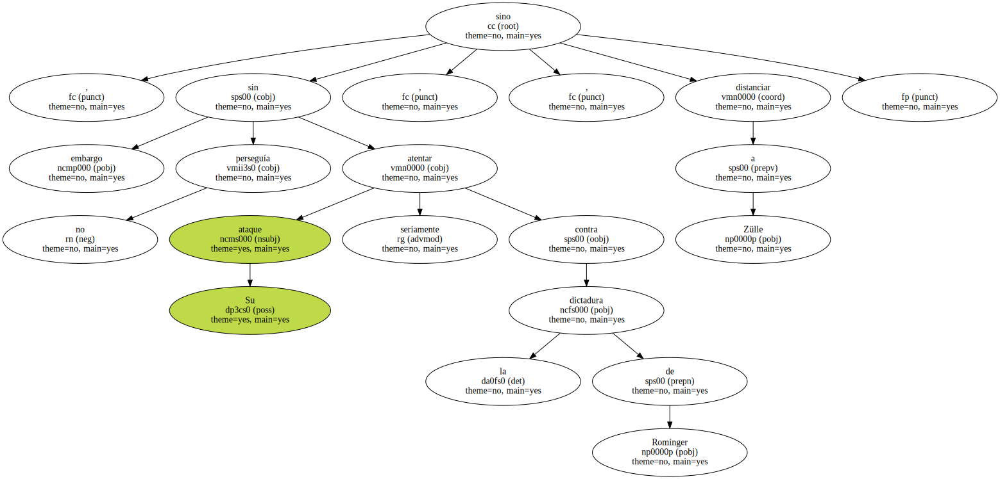Sorprendente esa actitud activa en un hombre que está alcanzando en esta Vuelta mucho más de lo que nadie , excepto quizá él , podía presumir.
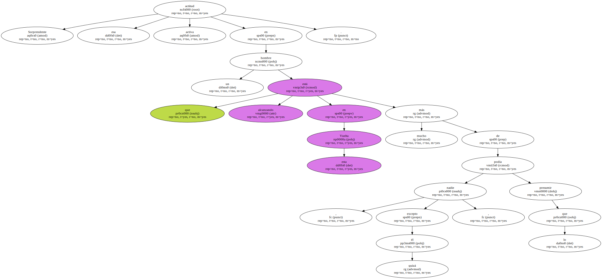Muy entero debe de encontrarse para verter sobre el asfalto unas energías a las que deberá apelar en los momentos importantes que aún quedan por desvelar sus rudos secretos ( Valdezcaray , Covadonga , Avila y Segovia ).
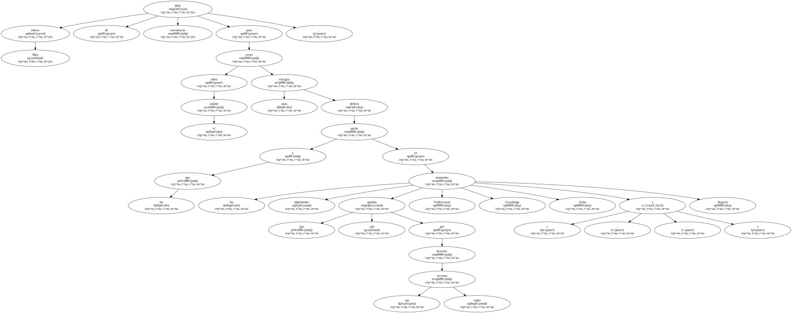Delgado vive con algo más que dignidad su declive.
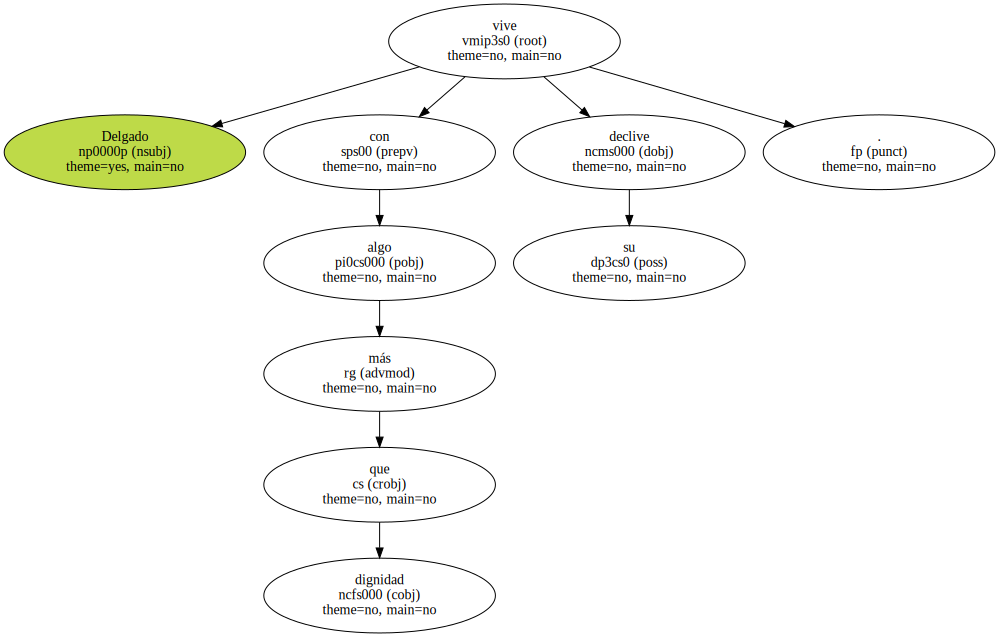